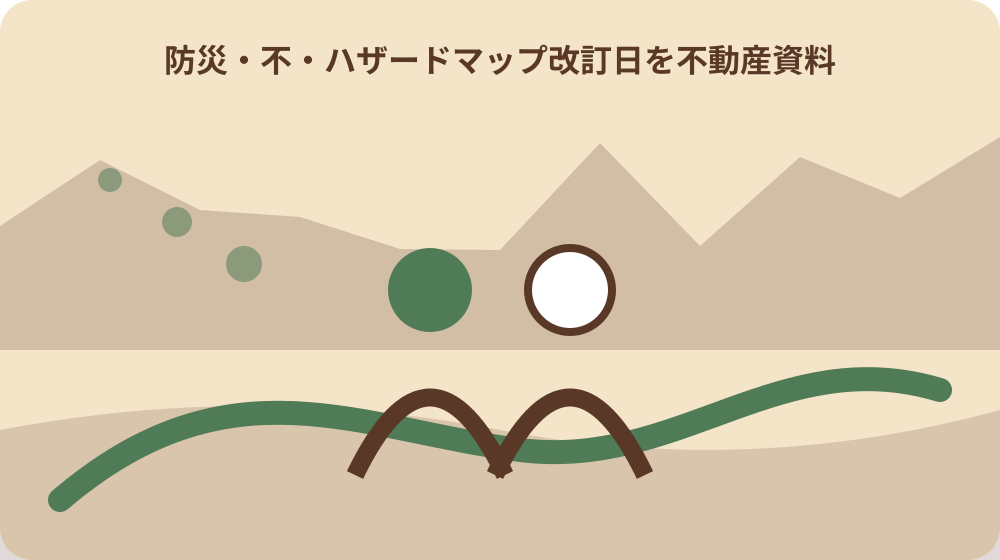
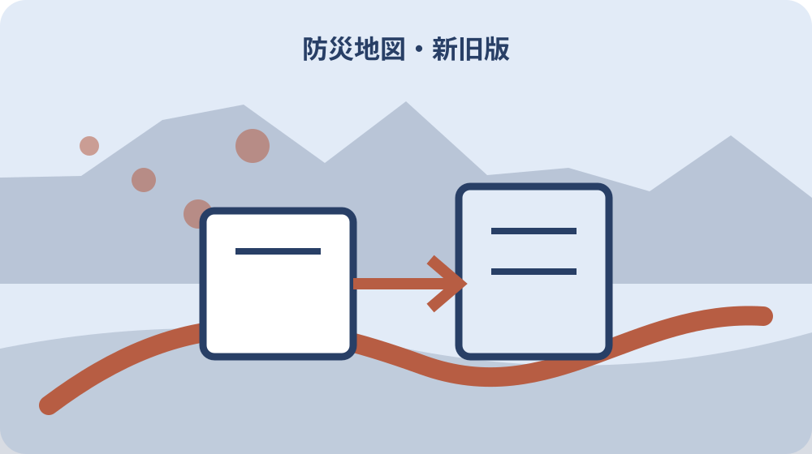

先に結論を確認する
この記事の答え：対象地番・住所、災害種別、公式ページ名、地区別PDF名、ページ表示更新日、取得日、対象地点を示した方法を別欄で残します。
森町で最初に照合する条件：不動産資料には対象地番・住所、災害種別、森町公式ページ名、地区別PDF名、ページ表示更新日、取得日を別欄で記録する。
不動産資料に残す版情報を先に決める
ハザードマップを不動産資料へ添えるとき、色の付いた地図だけを保存すると、後から何年の資料か、誰がどこから取得したかを確かめられません。最初に対象地番・住所、災害種別、公式ページ名、地区別PDF名、ページ表示更新日、取得日、記録者を一組で残す版管理票を作ります。
森町公式ページは土砂災害危険箇所、河川氾濫区域、防災関係施設の位置等を示すと説明しています。これらは役割が異なる情報です。「ハザードあり・なし」という一欄にまとめず、何の災害情報をどの資料で見たかを分け、見ていない種別を空欄にしません。
完成物は危険度を断定する評価書ではなく、契約や家族引継ぎの時点で同じ資料へ戻れる記録です。地図画像を切り抜く場合も、元URL、ファイル名、取得日、凡例、対象地点を失わないよう、切り抜きと全体ページを同じ資料番号で結びます。
最初の確認時に、資料を使う予定日も入れます。調査日から契約日まで期間が空くなら再確認日を先に設定し、古い印刷物が現行版のように扱われるのを防ぎます。
調査票の一行目に「現行使用版」を置き、作業途中の画像には「参考」と表示します。契約担当が複数ファイルを受け取っても、説明に採用した資料を迷わない構成にします。現行版には確定した確認者と確認時刻を加え、共有後に差し替える場合は受領者へ新しい資料番号を伝えます。
ページ更新日と地図の版を分けて読む
森町防災ハザードマップのページには2025年4月1日という表示更新日があります。これは確認すべき重要な時点ですが、各PDF内の作成日や改訂日と同じだと自動的に決めません。版管理票には「ウェブページ表示更新日」と「PDF内の版表示」を別欄で置きます。
PDFを開いたら表紙、奥付、凡例、欄外を見て、作成年月や改訂表記があるか確認します。見つからない場合は、ファイル名やダウンロード日時から推定して版を作らず、「PDF内の版表示を確認できず」と記録します。必要性が高ければ危機管理課へ資料名を示して尋ねます。
ファイルの保存日時は自分が取得した時刻であり、地図の作成日ではありません。ブラウザーに表示されたページ更新日もファイル更新日とは限りません。三つの日付を同じ欄へ入れず、出所を添えて後から比較できるようにします。
担当窓口へ版を尋ねるときは、対象PDF名、ページ表示更新日、自分の取得日を読み上げます。「最新ですか」だけでなく、どの資料の時点を確かめたいかを特定して回答日を残します。
ページ更新の理由が表示されていない場合、地図内容が変わったとは断定しません。連絡先やファイル差替えなど複数の可能性を残し、対象物件周辺の変更有無を別に確認します。
全図と六つの地区図を取り違えない
森町公式ページには全図のほか、三倉、天方、森、一宮、園田、飯田の地区別PDFが掲載されています。対象物件の位置を確認する際は、全図だけで概略を見て終わらず、該当する地区図の名称まで記録します。地区名は住所から思い込みで選ばず地図上で照合します。
地区境に近い物件や複数筆にまたがる敷地は、一枚だけでは周辺経路を確認しにくいことがあります。隣接する地区図も見た場合は、主に使った図と補助図を分けます。どちらの凡例を読んだかが分かるよう、資料番号を別々に付けます。
不動産資料には「森町ハザードマップ」とだけ書かず、「森地区PDF、取得日○年○月○日」のように特定します。家族へ渡す場合も、地区図の保管場所と対象地点の印を説明し、別の物件の地図と混在させません。
全図は町域の関係を把握する資料、地区図は対象地周辺を読む資料として用途欄を分けます。片方にしかない表記をもう片方へ写す場合は、転記元の資料番号を明示します。
対象物件と避難経路が別地区にまたがる場合は、物件所在地の図だけで完了にしません。経路上で参照した地区図を補助資料として登録し、利用目的を添えます。地区図を追加した日と確認者も残し、主資料との関係を明確にします。引継ぎ先も記録します。

災害種別ごとに確認欄を分ける
洪水と土砂災害は同じ色や区域を意味しません。ウェブ地図では複数のレイヤーを重ねられますが、紙へ印刷すると何を表示したか分からなくなることがあります。版管理票には洪水、土砂災害など確認した種別を列で分け、凡例の名称を資料どおりに転記します。
国のハザードマップポータルも、洪水、土砂災害、高潮、津波等の情報を重ねて表示できると案内しています。重ねた画面を保存する場合は、表示レイヤー、縮尺、取得時刻を残します。森町公式PDFと国の重ねる地図を同一資料とは扱いません。
確認していない災害種別には「該当なし」と書かず「未確認」とします。区域表示がない理由は、対象外、データ未掲載、縮尺不足など複数考えられるからです。情報の解釈は作成機関へ問い合わせるという国の案内に従い、必要な質問を残します。
重ね合わせ画面では色が重なり、元の凡例が読みにくくなる場合があります。説明用には災害種別ごとの画面も残し、複合表示だけから個別区域を判断しないようにします。
地図の凡例名が町PDFと国ポータルで異なる場合、似た色でも同じ分類へ統合しません。各作成機関の用語を保持し、比較した日と表示条件を記録します。
対象物件の位置を地図へ再現できる形にする
地図上の丸印だけでは、縮尺や印刷範囲が変わると位置を再現できません。対象地番・住所、近くの道路や河川、目印、北向きを記し、元地図のページや図郭に戻れるようにします。複数筆なら筆ごとに番号を付け、敷地全体の中心だけで代表させません。
国土交通省は、水害ハザードマップを提示し、対象物件のおおむねの位置を示す説明方法を掲げています。不動産資料ではこの趣旨を踏まえ、位置を示した地図と、位置の根拠にした住所・地番資料を結びます。ただし自作の印が公式の区域線を変更しないよう区別します。
画面のスクリーンショットにはURLや取得日が写らない場合があります。画像番号と版管理票を同じ案件番号で結び、元ページへのリンクを別に保存します。印刷物には余白へ資料番号を書き、切り離されても出典を探せるようにします。
物件位置の印は区域の線や色を隠さない形にします。ピンの中心、矢印の先など基準を決め、別の担当者が同じ住所から同じ位置を再確認できる説明を添えます。
集合住宅や広い敷地では建物中心と敷地範囲を区別します。説明対象が土地か建物かを表に書き、単一点の印で敷地全体の区域判定を代替しません。
指定避難所一覧を別の更新資料として照合する
ハザードマップには防災関係施設の位置が示されますが、避難所情報は別の公式ページでも更新されます。町指定避難所等のページは2024年8月10日を表示更新日とし、15の指定避難所を施設名、住所、電話番号等で掲載しています。地図と一覧の更新時点を同じだと決めません。
同じページには町内救護所、防災ヘリポート、緊急物資集積場所も別表で掲載されています。施設名が地図上にあるだけで、すべて同じ用途の避難先とは限りません。不動産資料へ書くときは施設区分を公式表どおりに残します。
物件から近い施設を自動的な避難先と断定せず、災害種別、開設状況、経路の安全などを実行時に確認します。版管理票では地図の版情報と避難所一覧の更新日を別行にし、どの時点の組合せを説明に使ったかを記録します。
施設名が変更されたり学校が旧施設表記になったりする場合に備え、住所も一緒に転記します。名称だけの一致で同じ施設と判断せず、公式一覧の番号と確認日を付けます。
国の説明義務資料から最新版利用を学ぶ
国土交通省は2020年7月17日、不動産取引時に水害ハザードマップ上の対象物件所在地を事前説明することを義務化する改正を公表しました。対象は水防法に基づく洪水、雨水出水、高潮のハザードマップであり、森町の全災害情報を一括して同じ法的扱いにするものではありません。
同省の説明方法には、市町村配布物または市町村ホームページ掲載物のうち、入手可能な最新のものを使うことが掲げられています。このため、調査開始時に保存した地図だけで契約時まで済ませず、説明直前に森町公式ページへ戻る再確認日を予定します。
版管理票には、最新資料を確認した日、以前の資料との差、差がないことを確認した範囲を書きます。単に「最新版」と記載すると、いつの時点で何と比較したかが分かりません。確認者と確認URLを付け、契約書類とは別に調査履歴を残します。
国の制度説明は水害ハザードマップの重要事項説明を扱います。土砂災害など別の確認まで完了した証拠にはせず、森町の各資料と契約担当者の確認を災害種別ごとに残します。
区域外をリスクなしと言い換えない
国土交通省は、対象物件が浸水想定区域に該当しないことをもって、水害リスクがないと相手方が誤認しないよう配慮を求めています。地図上で色が付かない場合も「安全」「浸水しない」と書き換えず、「確認した資料上で区域表示を確認できなかった」と範囲を限定します。
地図の縮尺、想定条件、掲載対象によって読み取れる内容は変わります。区域線の近くでは、印刷のずれや物件位置の置き方も影響します。境界付近を自己判断で内外に分けず、元データや作成機関へ確認する事項として残します。
土砂災害や河川氾濫の表示は、日々の気象情報や実際の避難判断そのものではありません。不動産資料の版管理と災害時の行動資料を分け、最新の警戒情報や避難情報はその時点の公式発信で確認するよう引継ぎ欄に明記します。
買主や家族へ伝える際は、区域表示の有無、確認資料、確認日を一組で読み上げます。結論だけをメール件名や口頭伝言にせず、凡例と対象地点を確認できる資料番号を添えます。
印刷物・PDF・ウェブ地図の取得時点を残す
紙で配布された地図、町サイトのPDF、静岡県地理情報システム、国の重ねるハザードマップは、表示方法と更新単位が異なります。不動産ファイルでは媒体種別を分け、紙なら入手場所と入手日、PDFならURLとファイル名、ウェブ地図なら表示レイヤーと取得時刻を残します。
同じ日でもウェブ表示が更新され、手元の印刷物が旧版になることがあります。新しい資料を見つけたら旧資料に「無効」とだけ書かず、いつ何へ置き換えたかを記録します。説明に使った版は別に明示し、調査途中の資料と混ぜません。
ファイル名を自分で変更する場合は、元ファイル名も台帳へ残します。保存先には案件番号、資料種別、取得日を使い、地図画像だけが単独で出回らないようにします。URLが変わった場合もページ名と取得日から追跡できます。
ウェブ地図を再表示するために、検索した住所、中心座標、縮尺も必要に応じて残します。ただし位置情報の共有範囲を決め、第三者へ不要な個人情報を渡さないようにします。

改訂を見つけたら旧版を上書きしない
公式ページの更新日が変わった、PDFの表紙が変わった、区域や施設の表示が変わったときは、新旧を並べます。変更箇所が分からない場合も、ファイルサイズや見た目だけで同一と断定せず、旧版と新版の取得日、出典、確認者を記録します。
変更点は「区域」「凡例」「施設」「連絡先」「レイアウト」に分けます。対象物件付近に影響がないように見えても、確認した範囲を限定します。問い合わせで説明を受けた場合は、回答部署、日付、質問文、回答範囲を版履歴へ追加します。
旧版を残すのは古い情報を使い続けるためではなく、過去の説明が何を根拠にしていたかを再現するためです。実行時に使う資料には「現行使用版」と明記し、旧版フォルダーとは分けます。紙資料も同じ番号体系で管理します。
新版を確認した人と説明に使う人が異なる場合は、変更点の受領日も残します。共有フォルダーへ置いただけで伝達済みとせず、現行使用版の番号を互いに確認します。
大石の視点：色より先に出典と時点を渡す
ここまでの更新日、地区図、避難所一覧、国の説明方法は一次資料で確認できる事項です。ここからは私、大石博之が家族や買主へ資料を渡す際の考えで、森町や国の公式見解ではありません。私は地図の色を説明する前に、出典と時点を一行で伝えます。
不動産の話では、色が付いているかどうかだけが結論として残りやすいものです。しかし地図が更新されれば、その結論の前提を再確認する必要があります。資料名、災害種別、取得日、対象地点の示し方を先に共有すれば、受け手が自分で公式資料へ戻れます。
安心を約束する資料にするのではなく、見落としを減らす共同作業の台帳にします。分からない版情報や境界付近の読み方を隠さず、誰へ確認するかを添えます。そうすることで、契約を急ぐ場面でも未確認事項を正しく止められます。
私なら表紙に「この地図で確認できること」と「この地図だけでは決めないこと」を並べます。版情報と利用限界が同時に見えれば、地図の色だけを抜き出した誤解を減らせます。
契約前に更新できる版管理票を完成させる
完成表には案件番号、対象地番・住所、災害種別、森町公式ページ名、地区図名、ページ表示更新日、PDF内版表示、取得日、対象地点の印、避難所一覧の更新日、確認者、未確認事項を並べます。各欄に出典URLを付け、地図画像と表を資料番号で結びます。
契約や説明の前日程には再確認欄を設けます。森町公式のハザードマップ、指定避難所等の一覧、必要に応じ国や県の地図を開き、入手可能な最新資料かを確認します。差があれば新版を追加し、説明担当者へ変更点を渡します。
最後に家族、所有者、仲介担当など次の利用者へ、現行使用版、旧版の保管場所、未確認事項、次回確認日を伝えます。版管理票は地図の内容を保証するものではありません。実行時点の公式資料と作成機関への確認へ戻れることをもって完成とします。
契約後も、説明に使用した版と確認履歴は案件記録として保管します。後に地図が改訂されたとき、過去時点の説明根拠と新しい生活防災情報を混ぜずに更新できるようにします。